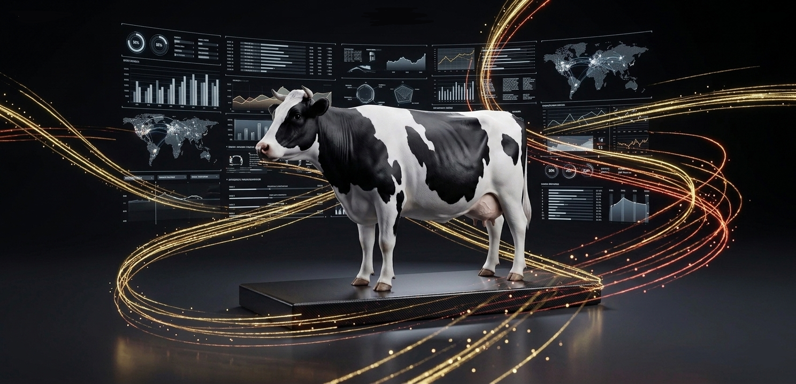
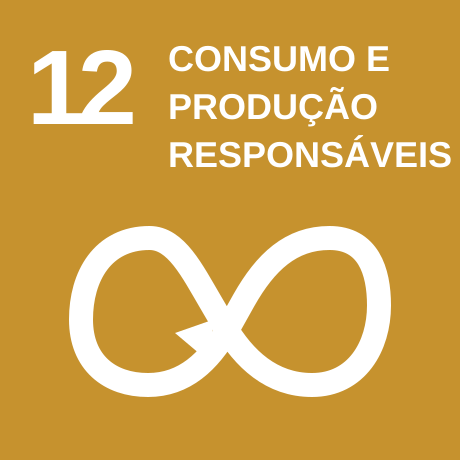

Principalmente por metano, uso de terra e mudanças de uso do solo.

Não existe uma resposta única. O impacto depende do alimento produzido, clima, energia disponível, solo, água, escala, transporte, desperdício, dieta e qualidade do manejo. A melhor estratégia costuma combinar produtividade, restauração ecológica e redução de perdas.
Principalmente por metano, uso de terra e mudanças de uso do solo.
Depende de captação, recarga de aquíferos, tecnologia e governança da água.
Solo exposto, baixa diversidade e uso intensivo de insumos ampliam erosão e degradação.
Quando bem manejadas, recuperam carbono, água, biodiversidade e fertilidade.
Boa para folhas e ervas, mas sensível ao consumo de energia elétrica.
Pode ser eficiente, mas exige manejo para evitar sobrepesca, efluentes e perda de habitat.
A ODS 12 propõe produzir e consumir com menos desperdício, menos poluição e melhor uso dos recursos naturais. Na alimentação, isso aparece em escolhas como reduzir perdas na cadeia produtiva, planejar compras, valorizar produtores responsáveis, melhorar embalagens, reaproveitar resíduos orgânicos e pressionar por sistemas com menor impacto ambiental.

Diminuir perdas no campo, transporte, mercados e casas evita emissão desnecessária, poupa água e reduz pressão sobre novas áreas produtivas.
Uso responsável de fertilizantes, defensivos, embalagens e efluentes reduz contaminação do solo, rios e alimentos.
Compostagem, reciclagem, reuso de água e economia circular transformam sobras em nutrientes, energia ou novos materiais.
Educação alimentar, rotulagem clara e dados confiáveis ajudam consumidores a comparar impactos e apoiar cadeias mais sustentáveis.
Os números foram selecionados em fontes públicas e científicas, priorizando FAO, IPCC, IPBES, Our World in Data e revisões acadêmicas. As escalas de 0 a 100% são índices comparativos para leitura visual: não substituem inventários locais, mas ajudam a comparar pressão ambiental entre sistemas.
Produção de Alimentos apresenta os impactos de diferentes modelos produtivos com linguagem visual imersiva. A proposta é mostrar que sustentabilidade depende de emissões, água, solo, biodiversidade, energia, transporte, desperdício e escolhas de consumo.